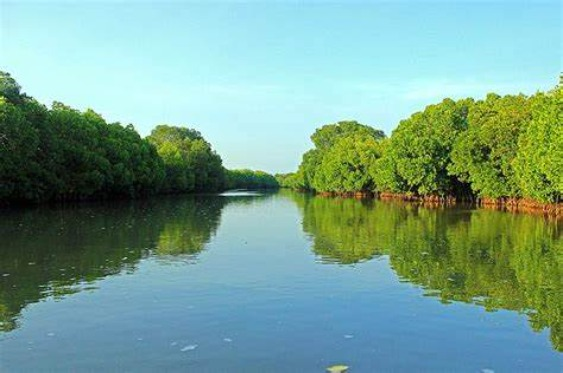
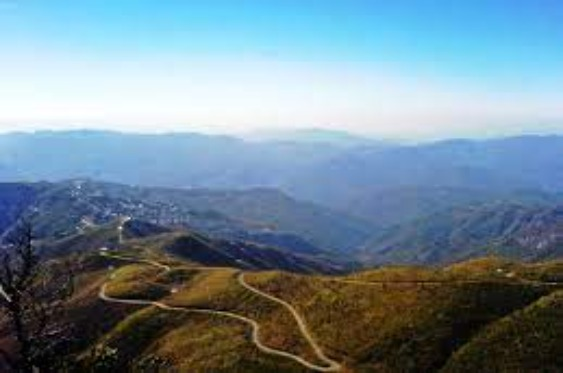
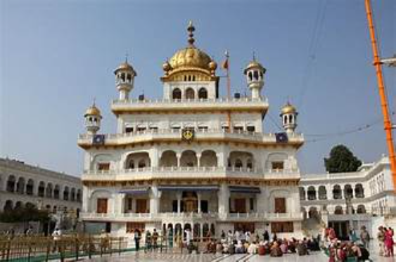
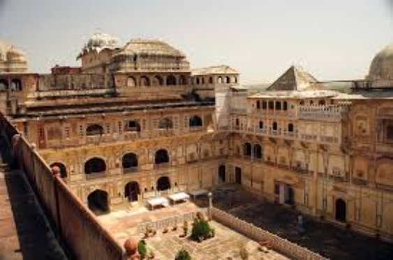
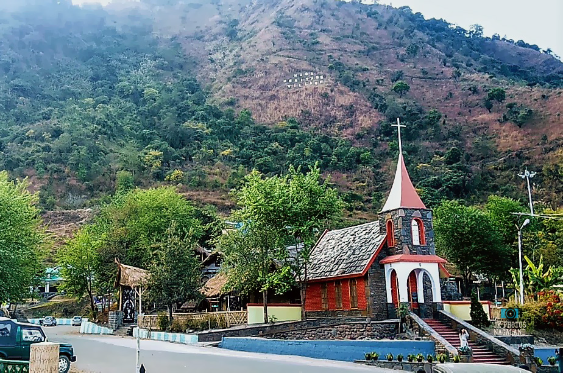

"Welcome to Celestial Travels!"
Namaste and welcome to Celestial Travels, where we invite you to embark on an extraordinary journey through the enchanting wonders of India! With a deep dedication to showcasing the beauty, heritage, and hospitality of this diverse and captivating land, we curate carefully crafted travel experiences that promise to immerse you in the vibrant tapestry of Indian culture. Whether you're yearning for spiritual enlightenment, craving culinary delights, or seeking thrilling adventures, Celestial Travels has something for every traveler to cherish and experience.
Spiritual Sojourns: Embark on a transformative journey to India's sacred sites, from the serene banks of the Ganges in Varanasi to the majestic temples of Tamil Nadu. Immerse yourself in the rich tapestry of spirituality as you connect with ancient traditions and find inner peace amidst serene surroundings. Cultural Expeditions: Dive into the heart of India's rich cultural heritage with our immersive tours to iconic landmarks, bustling bazaars, and vibrant festivals. Explore the architectural marvels of Rajasthan, indulge in the diverse cuisines of Delhi, and witness the joyous celebrations of Diwali and Holi.
Maharastra

Maharashtra, a state in western India, boasts a rich and diverse cultural heritage that reflects its long history, vibrant traditions, and multicultural influences. From ancient archaeological sites to modern art forms, Maharashtra's cultural tapestry is a testament to the resilience and creativity of its people.Financial Capital of India.
learn more
Andhra Pradesh
Andhra Pradesh, situated in the southeastern part of India, is a state known for its rich cultural heritage, diverse landscapes, and historical significance.Andhra Pradesh is bordered by Telangana to the north, Odisha to the northeast, Karnataka to the west, Tamil Nadu to the south, and the Bay of Bengal to the east.
learn more
Karnataka
Karnataka is a state located in the southwestern region of India, bordered by the states of Maharashtra, Goa, Kerala, Tamil Nadu, and Telangana. It is the seventh-largest state by area and the eighth-most populous state in India. Karnataka is known for its rich cultural heritage, diverse landscapes, historical monuments, vibrant cities, and thriving IT industry.
learn more
Kerala

Kerala, often referred to as "God's Own Country," is a state located in the southwestern region of India. Renowned for its stunning natural beauty, rich cultural heritage, and tranquil backwaters, Kerala is a popular tourist destination that attracts travelers from across the globe. Here's a detailed description of Kerala
learn more
Tamilnadu
Tamil Nadu is bordered by the Bay of Bengal to the east, the Indian Ocean to the south, Kerala to the west, Karnataka to the northwest, and Andhra Pradesh to the north. The state's landscape is diverse, featuring coastal plains along the eastern seaboard, the Western Ghats in the west, fertile plains of the Kaveri River basin, and arid regions in the north
learn more
Manipur
Manipur, nestled in the northeastern region of India, is a state renowned for its scenic landscapes, rich cultural heritage, and vibrant traditions.The state is characterized by its picturesque hills, verdant valleys, and lush forests. The Loktak Lake, one of the largest freshwater lakes in Northeast India, is a prominent natural feature of Manipur its a culturally diverse state.
learn more
Meghalaya

Meghalaya, located in the northeastern part of India, is a state known for its breathtaking landscapes, abundant rainfall, and vibrant culture.Meghalaya shares borders with Assam to the north and east, Bangladesh to the south and west, and the state of Tripura to the southeast.
learn more
Mizoram
Mizoram, nestled in the northeastern part of India, is a state renowned for its scenic landscapes, rich cultural heritage, and vibrant tribal communitiesMizoram shares borders with Manipur to the north, Tripura to the northwest, Assam to the northeast, and Bangladesh to the west and south. The state is characterized by its rugged hills, verdant valleys, and dense forests.
learn more
Punjab
Punjab, a region in South Asia, is known for its rich cultural heritage, vibrant traditions, and diverse history. The cultural landscape of Punjab is a unique blend of ancient traditions and modern influences.Punjab is famous for its intricate embroidery called Phulkari, which involves vibrant threadwork on fabrics.
learn more
Rajasthan
Rajasthan, the largest state in India by area, is renowned for its rich and vibrant cultural heritage. The state is a kaleidoscope of colors, traditions, and history. Rajasthan is home to numerous majestic palaces and forts that showcase exquisite Rajput architecture.
learn more
Nagaland
Nagaland, located in the northeastern part of India, is a state known for its rich cultural diversity, vibrant traditions, and unique heritage.Nagaland is home to 16 major tribes, each with its distinct language, customs, and traditional attire. Some prominent tribes include the Angami, Ao,Lotha, Konyak, and Sumi.
learn more
Andaman and Nicobar Islands
The Andaman and Nicobar Islands are a group of islands at the southeastern edge of the Bay of Bengal. The region is known for its pristine beaches, diverse marine life, and unique indigenous cultures.The islands are home to several indigenous tribes, such as the Great Andamanese, Onge, Jarawa, and Sentinalese. These tribes have distinct languages, cultures.
learn more
Assam
Assam, located in the northeastern part of India, is a state known for its rich cultural heritage, diverse ethnic communities, and lush landscapes. Here's a brief overview of the cultural aspects of Assam.Assam is globally renowned for its tea production. The tea estates in the region produce some of the finest and most robust teas in the world.
learn more
Jharkhand
Jharkhand, located in eastern India, is a state with a rich cultural heritage, diverse tribal communities, and natural resources.Jharkhand is home to a significant population of tribal communities, including Santhals, Munda, Oraon, Ho, and others.These tribes have their own distinct languages,traditions,, and cultural practices.
learn more
Himachal Pradesh
Himachal Pradesh, nestled in the western Himalayas, is a state in northern India known for its breathtaking landscapes, diverse cultures, and vibrant traditions.Himachal Pradesh is home to various religious communities, and the region has a rich tapestry of temples, monasteries, and gurudwaras. Key religious sites include the Hidimba Devi Temple in Manali.
learn more
Arunachal Pradesh
Arunachal Pradesh, situated in the northeastern part of India, is known for its rich cultural diversity, pristine landscapes, and a tapestry of indigenous tribes.Arunachal Pradesh is home to more than 20 major tribes and numerous sub-tribes, each with its own distinct language, customs, and traditions. Some prominent tribes include the Nyishi, Adi, Apatani, Galo, and Monpa.
learn more
Bihar
Bihar, located in eastern India, is a state with a rich historical and cultural heritage.Bihar has played a crucial role in the historical and cultural development of India. It was the seat of ancient empires, including the Magadh Empire, which contributed significantly to Indian art, philosophy, and political thought.Bihar is closely associated with Buddhism.
learn more
Chhattishgarh
Chhattisgarh, located in central India, is a state known for its rich cultural heritage, tribal communities, and diverse landscapes.Chhattisgarh is home to numerous indigenous tribal communities, each with its own distinct languages, customs, and traditions. Gond, Baiga, Maria, and Muria are among the major tribal groups in the state
learn more
Haryana
Haryana, located in northern India, is a state with a rich history, cultural heritage, and significant agricultural contributions.Known as the "Granary of India," Haryana has a strong agricultural tradition. The fertile plains of the state contribute significantly to the country's food production. Wheat and rice are major crops.
learn more
Goa
Goa, located on the western coast of India, is renowned for its stunning beaches, vibrant nightlife, and a unique blend of Indian and Portuguese cultures. Here's an overview of the cultural aspects of Goa.Goa was a Portuguese colony for over four centuries, and this influence is evident in its architecture, cuisine, and religious practices.
learn more
Gujarat
Gujarat, located in western India, is a state with a rich history, vibrant culture, and significant economic contributions.Gujarat has a deep historical legacy, with ancient civilizations like the Indus Valley Civilization and the Harappan culture having flourished in the region. The state is also associated with the life of Mahatma Gandhi.
learn more
Jammu and Kashmir
Jammu and Kashmir, located in the northern part of India, is known for its stunning landscapes, diverse cultures, and a complex geopolitical situation.Jammu and Kashmir boast diverse geographical features, including the Himalayan mountain ranges, valleys, lakes, and the fertile plains of Jammu. Each region has its own unique cultural influences.
learn more
Madhya Pradesh
Madhya Pradesh, located in central India, is a state with a diverse cultural heritage, historical significance, and natural beauty.Madhya Pradesh is home to numerous historical sites, including the UNESCO World Heritage sites of Khajuraho, Sanchi, and Bhimbetka. These sites showcase the rich cultural and architectural history of the region.
learn more
Tripura
Tripura, located in northeastern India, is a state known for its rich cultural heritage, diverse ethnic communities, and lush landscapes.Tripura is home to several indigenous tribes, including the Tripuris, Reangs, Jamatias, and others. These tribes have distinct languages, customs, and traditions, contributing to the cultural diversity of the state.
learn more
Uttar Pradesh
Uttar Pradesh, located in northern India, is the most populous state in the country and holds a prominent place in Indian history and culture.Uttar Pradesh is home to several cities with immense historical and cultural significance, including Agra, Varanasi, and Lucknow. Agra is known for the iconic Taj Mahal, a UNESCO World Heritage site, while Varanasi is one of the oldest continuously inhabited cities and a major religious and cultural center.
learn more
Uttarkhand
Uttarakhand, often referred to as the "Devbhumi" or "Land of the Gods," is a state in the northern part of India. It is known for its stunning landscapes, spiritual significance, and rich cultural heritage.Uttarakhand is home to several significant religious sites. The Char Dham Yatra, comprising Yamunotri, Gangotri, Kedarnath, and Badrinath, is a sacred pilgrimage for Hindus. Rishikesh and Haridwar are famous for their ghats, temples, and spiritual ambiance.
learn more
Odisha
Odisha, located on the eastern coast of India, is a state known for its rich cultural heritage, ancient temples, diverse landscapes, and vibrant arts.Odisha is famous for its ancient temples with intricate architecture. The Jagannath Temple in Puri, the Konark Sun Temple, and the Lingaraja Temple in Bhubaneswar are significant landmarks showcasing the state's architectural brilliance. learn more
Sikkim
Sikkim, located in the northeastern part of India, is a small and picturesque state known for its stunning landscapes, diverse culture, and rich biodiversity.Sikkim is home to various ethnic communities, including the Lepchas, Bhutias, and Nepalese. Each community has its own distinct culture, traditions, and customs.Sikkim celebrates a variety of festivals that highlight its cultural diversity.
learn more
Telangana
Telangana, a state in southern India, has a rich cultural heritage deeply rooted in its history, traditions, and diverse communities.Telugu is the primary language spoken in Telangana, and the region has a rich literary tradition. The state has produced renowned poets, writers, and scholars. Bathukamma, a unique floral festival, involves the creation of vibrant flower arrangements with cultural and historical significance.
learn more
West Bengal
West Bengal, located in eastern India, is a state with a rich cultural heritage, historical significance, and diverse traditions.West Bengal has a strong literary tradition and has produced some of the most prominent literary figures in the country. The state is the birthplace of Nobel laureate Rabindranath Tagore, and Kolkata, the capital, has been a hub for intellectual discussions and literary activities.
learn more
3 Comments

John Doe 01 Jan 2045
Diam amet duo labore stet elitr invidunt ea clita ipsum voluptua, tempor labore accusam ipsum et no at. Kasd diam tempor rebum magna dolores sed sed eirmod ipsum. Gubergren clita aliquyam consetetur sadipscing, at tempor amet ipsum diam tempor consetetur at sit.
John Doe 01 Jan 2045
Diam amet duo labore stet elitr invidunt ea clita ipsum voluptua, tempor labore accusam ipsum et no at. Kasd diam tempor rebum magna dolores sed sed eirmod ipsum. Gubergren clita aliquyam consetetur sadipscing, at tempor amet ipsum diam tempor consetetur at sit.
John Doe 01 Jan 2045
Diam amet duo labore stet elitr invidunt ea clita ipsum voluptua, tempor labore accusam ipsum et no at. Kasd diam tempor rebum magna dolores sed sed eirmod ipsum. Gubergren clita aliquyam consetetur sadipscing, at tempor amet ipsum diam tempor consetetur at sit.